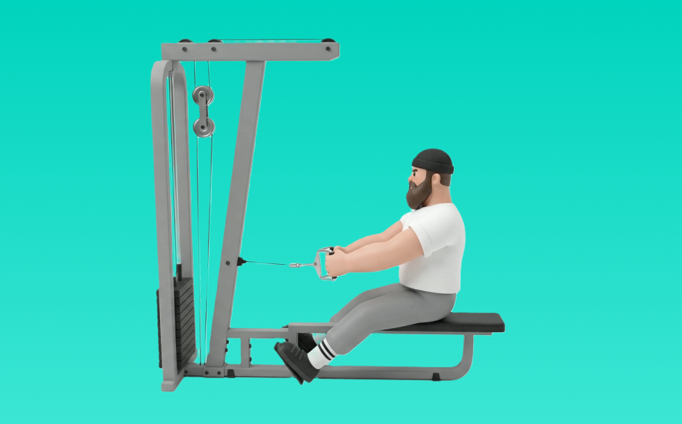

シーテッドロウ

シーテッドロウとは、ケーブルを使って「引く」動作で背中（広背筋、僧帽筋、菱形筋）＋腕（上腕二頭筋）を鍛える種目です。可動域全体で張力が抜けにくいのが特徴で、体幹を固め、みぞおち付近へ引いて戻す動作を繰り返します。背中の厚み・広がり作りや姿勢改善が期待できます。
- 対象部位
- 背中
- 器具
- ケーブル
- 記録形式
- 重量・回数
- 別名
- シーテッドロー / cable row
YouTube動画
-
【シーテッドロウイング】美姿勢をつくろう！背中に効かすシーテッドロウイングのフォーム
-
【筋トレ】背中全体に効く!!シーテッドローイングのフォームをご紹介!!
-
シーテッドローの効果的なやり方｜背中に効かせる3つのポイント
-
トレーナーが解説！姿勢改善に効果的な「シーテッドロウ」の使い方！
-
徹底解説シリーズ05 鈴木雅が「シーテッドロウイング」を伝授
-
シーテッドロウで狙い分け！広背筋を狙う場合と僧帽筋を狙う場合の引き方解説
-
【背中トレ】広背筋を鍛えるシーテッドロウのやり方解説
-
【広背筋トレ】ケーブルローイング (マシン)の正しいフォーム | 「背中に効かせる」ベーシックなやり方をご紹介！
-
【背中トレ】背中の厚みをつけるならこの種目！シーテッドローイング徹底解説
-
【体が硬い人必見】初心者でも簡単！背中はマシンシーテッドロウで鍛え分けよう！
-
筋トレ初心者が最初に覚えるべき背中トレのマシン使い方解説【エニタイムフィットネス】
-
背中トレ、シーテッドロウの効かせ方！【僧帽筋】
-
【背中強化】シーテッド・ロー使用方法
-
【シーテッドローが効かない人必見！】NGフォームと正しいフォームを解説します。
-
【広背筋 or 僧帽筋？】同じ種目で効かせ方が激変！アイソラテラルロウ徹底解説
-
【広背筋】シーテッドロウの効率的なやり方・使い分け方を徹底解説【僧帽筋】
-
シーテッドロー基礎編使い方とポイント
-
【１分解説】シーテッドローの使用方法【サイボディ】
-
【背中強化】シーテッド・ロウ使用方法
-
【初心者にも超分かりやすい！】ジムでの基本背中トレメニュー
YouTubeショート
-
逆三角形の体を作るシーテッドロー【ポパイ関根選手×ツカケン選手】
-
背中 筋トレマシン使い方【シーテッド・ロー（HAMMER STRENGTH）】
-
【30秒でわかる】シーテッドロウ解説📝
-
筋トレ初心者必見‼︎シーテッドローイング #筋トレあるある #背中トレ #シーテッドローイング
-
【背中トレ解説】ケーブル・シーテッドロウ
-
シーテッドローこれを変えるだけで背中が激変 #筋トレ #筋肉番付
-
背中「シーテッドロー」#shorts
-
背中をデカくするシーテッドローのやり方※エゴイスト
-
【1分でわかる】シーテッドローの使い方 #筋トレ #筋肉 #トレーニング #ジム #背中トレ #背中
-
マシンローイングの正しいやり方 | ボディビル日本チャンピオンが解説 #shorts【ビーレジェンド プロテイン】
-
シーテッドロー マシンの使い方
-
ラットプルダウン/シーテッドローの使い方【Matrix】VS-S331
-
【背中】【シーテッドローイング】よくある3つの間違い #パーソナルトレーナー #筋トレ #フィットネス #背中トレ
-
シーテッドロウマシン（Seated Row）のやり方と基本フォーム
-
背中の厚みをつける！正しいシーテッドローのやり方 #筋トレ #shorts #ジム #筋トレ初心者 #井上拓哉筋トレチャンネル
-
9割が知らない”シーテッドロー”を効かす3つのポイント
-
【シーテッドロウ】マシン使い方説明動画
-
【1分で分かるマシンの使い方】シーテッドロー編 #Shorts
-
背中が成長しないラットプルダウン
-
正しいラットプルダウン4つのポイント【筋トレ】
-
背中トレのやり方🔥〜ダンベルワンハンドロー基礎編〜 #筋トレ #マッチョ #筋肉社長 #背中トレ
-
正しいダンベルロウ4つのポイント #筋トレ
-
【チェストサポートロウ】怪我をせず僧帽筋を鍛える正しいフォーム解説
-
【筋トレ】初心者向け🔰エニタイムで背中トレ！
-
シーテッドローの正しい使い方教えます
-
よく見る間違い！#プーリーロー #シーテッドロー #ロープーリーロー
-
【ジムトレ】ローロウマシンの使い方動画公開中！ #Shorts #背中トレ #ジムトレ
-
正しいサイドレイズ4つのポイント #筋トレ
-
片手で広い可動域で背中を強烈に刺激！シーテッドロウ
-
【ジム初心者】肩こり解消・姿勢改善トレーニング【シーテッドロー】
動作方法
- 体幹を安定させ、背中が丸まらない姿勢を作る
- 肘を後方へ引き、肩甲骨を寄せる
- 勢いを使わず、ゆっくり戻す
動作ポイント
- 背中を丸めない
- 首に力を入れすぎない
- 戻しを速くしすぎない
ワンポイントアドバイス
- 腕ではなく背中で引く感覚を優先する
- 反動が増えたら重量を一段下げる
目的別回数設定
目的や体力に応じた一般的な目安です。無理のない範囲で調整してください。
- 筋力アップ
- 1〜5回
- 筋肥大
- 6〜12回
- 持久力アップ
- 13〜20回
YouTube動画について
動画はYouTubeの公開情報をもとに表示しています。内容は投稿者によるもので、Biggrによる監修ではありません。
アプリを入手
筋トレやトレーニングの記録はBiggrにお任せください。今すぐ無料で使い始められます。